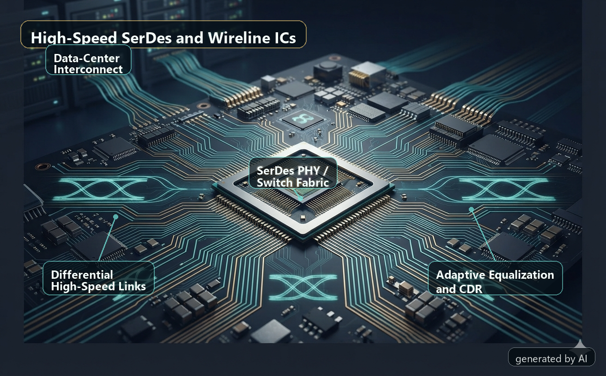
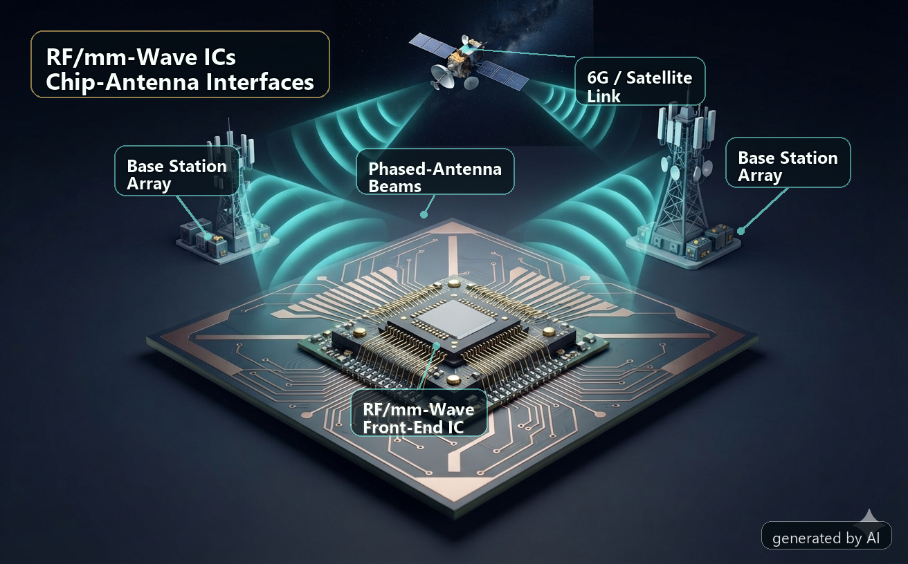
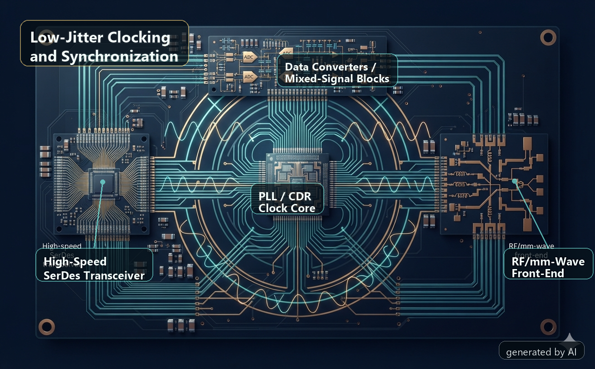
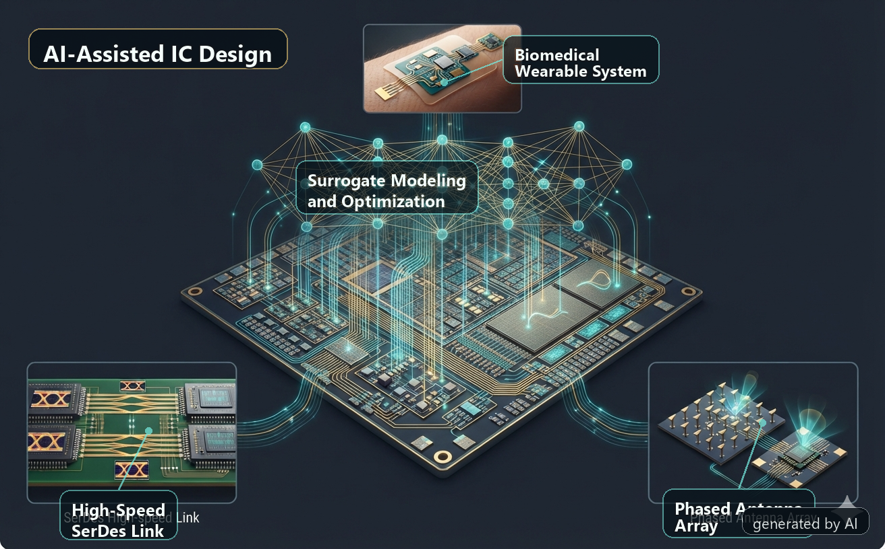
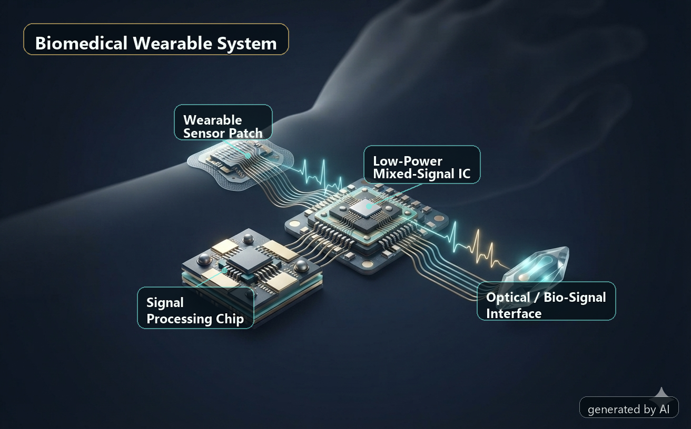

Research Directions
Chips and design methods for connected intelligent systems
Our projects combine circuit architecture, AI-assisted design methodology, and chip-level demonstrations. We aim to make data links and front-end circuits faster, more energy-efficient, and more reliable in practical systems.

AI computing · Data centers · Chiplets
High-Speed SerDes and Wireline ICs
We study high-speed wireline circuits that move large volumes of data across chips, boards, and systems. Our research focuses on energy-efficient transmitter and receiver front-ends, clock-data recovery, equalization, and adaptive link techniques for next-generation computing platforms.
- SerDes transmitters and receivers
- Low-power high-speed links
- Adaptive equalization and data-center interconnects

6G · Satellite links · Wireless sensing
RF/mm-Wave ICs and Chip-Antenna Interfaces
We investigate compact RF/mm-wave front-end circuits and chip-antenna interfaces for future wireless systems. The research includes transmitter front-ends, phased-array building blocks, broadband matching networks, and circuit-system co-design methods for high-frequency communication and sensing.
- Millimeter-wave transmitters
- Phased-array and broadband front-end circuits
- Chip-package-antenna co-design

High-speed links · RF systems · Synchronization
Low-Jitter Clocking and Synchronization ICs
Clocking is a key foundation for high-speed and high-frequency integrated circuits. We develop low-jitter PLLs, clock recovery circuits, and synchronization techniques that support reliable data transmission and broadband front-end operation under practical power and integration constraints.
- PLL architectures and CDR circuits
- Jitter optimization and phase-noise reduction
- Clocking for wireline and RF systems

Design automation · Modeling · Optimization
AI-Assisted IC Design Methodologies
We explore how AI can help circuit designers search large design spaces, build fast performance models, and reduce repeated manual iterations. This direction supports early-stage publications on AI-assisted design methods and also feeds into later tape-out projects.
- Surrogate modeling and active-learning simulation loops
- Automated circuit sizing and design-space exploration
- Passive network optimization and layout-aware prediction

Wearables · Biomedical sensing · Health monitoring
Low-Power Mixed-Signal ICs for Biomedical Systems
We study low-power mixed-signal circuits for compact sensing and biomedical systems. The goal is to develop energy-efficient interfaces and signal-processing circuits that can support continuous, intelligent, and wearable health-monitoring platforms.
- Low-power sensing circuits
- Mixed-signal interfaces and biomedical signal acquisition
- Energy-efficient circuits for wearable systems